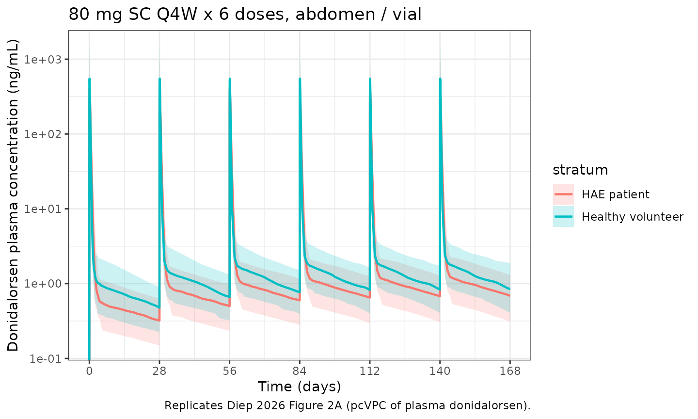
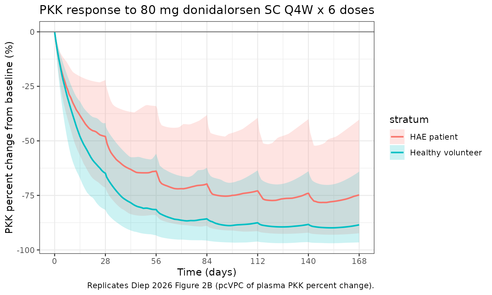

Diep_2026_donidalorsen
Source:vignettes/articles/Diep_2026_donidalorsen.Rmd
Diep_2026_donidalorsen.Rmd
library(nlmixr2lib)
library(rxode2)
#> rxode2 5.0.2 using 2 threads (see ?getRxThreads)
#> no cache: create with `rxCreateCache()`
library(dplyr)
#>
#> Attaching package: 'dplyr'
#> The following objects are masked from 'package:stats':
#>
#> filter, lag
#> The following objects are masked from 'package:base':
#>
#> intersect, setdiff, setequal, union
library(tidyr)
library(ggplot2)
library(PKNCA)
#>
#> Attaching package: 'PKNCA'
#> The following object is masked from 'package:stats':
#>
#> filterDonidalorsen popPK/PD in healthy volunteers and HAE patients (Diep 2026)
Replicate the population pharmacokinetic-pharmacodynamic model reported by Diep et al. (2026) for donidalorsen, a triantennary GalNAc3-conjugated 2’-O-methoxyethyl antisense oligonucleotide targeting plasma prekallikrein (PKK) mRNA. The structural model is a two-compartment first-order-SC model with categorical covariates on the typical absorption rate constant (arm vs abdomen/thigh injection site; autoinjector vs vial drug presentation), allometric scaling of CL/F, Vc/F, Q/F, and Vp/F on total body weight with paper-estimated exponents, multiplicative HAE-patient effects on Vc/F and Q/F, and an indirect-response model for plasma PKK with donidalorsen-mediated inhibition of PKK production (multiplicative HAE-patient effects on baseline PKK and IC50).
- Citation: Diep JK, Liu M, Singh P, Dorow S, Cohn DM, Bordone L, Newman KB, Gao X. Population pharmacokinetic/pharmacodynamic modeling of donidalorsen, an antisense oligonucleotide in development for prophylaxis of hereditary angioedema. CPT Pharmacometrics Syst Pharmacol. 2026;15(2):e70206. doi:10.1002/psp4.70206
- Article: https://doi.org/10.1002/psp4.70206
Population
The pooled PK/PD analysis included 177 active-arm subjects from four clinical trials (Diep 2026 Section 3 overview, Table S2):
- NCT03263507, phase 1 multiple-ascending-dose study in healthy volunteers; four cohorts at 20 / 40 / 60 / 80 mg SC Q4W x 4 doses (days 1, 29, 57, 85); 32 enrolled (8 per cohort), 6:2 active:placebo randomization.
- NCT04030598, phase 2 in adult patients with HAE (HAE-C1INH-Type1 / HAE-C1INH-Type2); Part A 80 mg SC Q4W x 4 doses with 2:1 randomization (n = 20) and Part B open-label 80 mg SC Q4W in HAE-nC1INH (n = 3).
- NCT05139810 / OASIS-HAE, phase 3 global trial in adult and adolescent (>= 12 to < 18 y) HAE-C1INH patients; cohort A 80 mg SC Q4W x 6 doses (3:1 randomization, n = 60) and cohort B 80 mg SC Q8W x 3 doses (3:1 randomization, n = 30).
- ISIS 721744-CS9 (unpublished), phase 1 single-dose vial-vs-autoinjector bioequivalence study in 78 healthy volunteers.
Baseline demographics (Diep 2026 Section 3 overview, n = 177): median
age 43 years (range 12-68); 55.4% female (98 of 177); 68.4% White (121
of 177); median total body weight 78 kg (range 37-151.9). Active-arm
pooled across studies: 101 healthy volunteers + 76 HAE patients. After
exclusions (placebo, M1 censoring of post-LLOQ samples for 3.4% PK and
1.5% PD, and PK samples collected at or beyond ADA onset for 3.1% PK),
the final analysis dataset contained 4242 plasma donidalorsen
concentrations and 1159 plasma PKK concentrations. The same demographics
are available programmatically via
readModelDb("Diep_2026_donidalorsen")$population.
Source trace
The per-parameter origin is recorded as an in-file comment next to
each ini() entry in
inst/modeldb/specificDrugs/Diep_2026_donidalorsen.R. The
table below collects them in one place. PK concentrations are in ng/mL;
PD (PKK) concentrations are in mg/L; time is in hours.
| Parameter / equation | Value | Source |
|---|---|---|
ka (abdomen or thigh, vial) |
0.952 1/h | Diep 2026 Table 1 final-model ka |
CL/F (WT = 70 kg) |
12.8 L/h | Diep 2026 Table 1 final-model CL/F |
Vc/F (WT = 70 kg, HV) |
69.8 L | Diep 2026 Table 1 final-model Vc/F |
Q/F (WT = 70 kg, HV) |
2.58 L/h | Diep 2026 Table 1 final-model Q/F |
Vp/F (WT = 70 kg) |
1840 L | Diep 2026 Table 1 final-model Vp/F |
| WT exponent on CL/F | 1.52 | Diep 2026 Table 1 footnote a |
| WT exponent on Vc/F | 2.34 | Diep 2026 Table 1 footnote b |
| WT exponent on Q/F | 1.79 | Diep 2026 Table 1 footnote c |
| WT exponent on Vp/F | 1.60 | Diep 2026 Table 1 footnote d |
| HAE effect on Vc/F | +42.6% (multiplier 1.426) | Diep 2026 Table 1 (Estimate 0.426) / footnote b |
| HAE effect on Q/F | -26.1% (multiplier 0.739) | Diep 2026 Table 1 (Estimate -0.261) / footnote c |
| Arm injection effect on ka | -33.8% (multiplier 0.662) | Diep 2026 Table 1 (Estimate -0.338) / footnote e |
| Autoinjector effect on ka | +26.2% (multiplier 1.262) | Diep 2026 Table 1 (Estimate 0.262) / footnote e |
BL (baseline PKK, HV) |
139 mg/L | Diep 2026 Table 2 final-model BL |
kout (PKK loss) |
0.00266 1/h | Diep 2026 Table 2 final-model kout |
Imax |
0.992 | Diep 2026 Table 2 final-model Imax |
IC50 (HV) |
0.158 ng/mL | Diep 2026 Table 2 final-model IC50 |
| HAE effect on BL | -13.2% (multiplier 0.868) | Diep 2026 Table 2 (Estimate -0.132) / footnote a |
| HAE effect on IC50 | +77.0% (multiplier 1.770) | Diep 2026 Table 2 (Estimate 0.770) / footnote b |
kin = BL * kout |
derived | Diep 2026 Section 3.2: BL = kin / kout |
| Indirect-response PD | d/dt(effect) = kin * (1 - Cc * Imax / (IC50 + Cc)) - kout * effect | Diep 2026 Section 3.2 inset equation |
| IIV%CL = 19.6% CV | omega^2 = log(0.196^2 + 1) ~= 0.0377 | Diep 2026 Table 1 |
| IIV%Vc = 59.0% CV | omega^2 = log(0.590^2 + 1) ~= 0.2985 | Diep 2026 Table 1 |
| IIV%Q = 10.2% CV | omega^2 = log(0.102^2 + 1) ~= 0.0104 | Diep 2026 Table 1 |
| IIV%Vp = 42.9% CV | omega^2 = log(0.429^2 + 1) ~= 0.1690 | Diep 2026 Table 1 |
| IIV%ka = 42.8% CV | omega^2 = log(0.428^2 + 1) ~= 0.1683 | Diep 2026 Table 1 |
| Full 5x5 PK omega block | rho_ij from Table 1 correlation entries; covariance = rho * sd_i * sd_j | Diep 2026 Table 1 correlation rows |
| IIV%BL = 25.9% CV | omega^2 = log(0.259^2 + 1) ~= 0.0649 | Diep 2026 Table 2 |
| IIV%kout = 36.6% CV | omega^2 = log(0.366^2 + 1) ~= 0.1257 | Diep 2026 Table 2 |
| IIV%IC50 = 83.1% CV | omega^2 = log(0.831^2 + 1) ~= 0.5251 | Diep 2026 Table 2 |
| Residual on Cc | proportional, sigma_logadd = 0.296 (NONMEM additive-on-log-scale -> nlmixr2 proportional) | Diep 2026 Table 1 |
| Residual on pkk | proportional, sigma_prop = 0.159 | Diep 2026 Table 2 |
Covariate column naming
| Source paper | Canonical column | Notes |
|---|---|---|
Total body weight, kg (source WTKG) |
WT |
Reference 70 kg = paper-stated reference subject (page 4 / Figure 3
caption). The source paper writes WTKG; the canonical
column is WT. |
| Disease status: 1 = patient with HAE | DIS_HAE |
New canonical entry registered alongside this model. Reference category 0 = healthy volunteer (pooled NCT03263507 + ISIS 721744-CS9). Pools the three HAE subtypes (HAE-C1INH-Type1, HAE-C1INH-Type2, HAE-nC1INH) per the Diep 2026 analysis. |
| Injection site: 1 = arm | INJSITE_ARM |
Reference 0 = abdomen or thigh. Per-dose-record covariate. Consistent with the existing canonical INJSITE_ARM (whose reference includes abdomen). |
| Drug presentation: 1 = autoinjector | DEVICE_AI |
Reference 0 = vial and syringe. Per-dose-record covariate. Pre-existing canonical from Yu 2022 ofatumumab. |
DIS_HAE is added to the canonical register in
inst/references/covariate-columns.md alongside this model.
WT, INJSITE_ARM, and DEVICE_AI
are pre-existing canonicals.
Virtual cohort
Original subject-level data are not publicly available. The virtual cohort below uses covariate distributions approximating the Diep 2026 Section 3 overview demographics. Body weight is sampled as a truncated log-normal matching the cohort median (78 kg) and range (37-151.9 kg).
set.seed(20260511)
n_each <- 100L
# Two strata: healthy volunteers (DIS_HAE = 0) and HAE patients
# (DIS_HAE = 1). Phase 1 healthy volunteers had cohort median age 43 y;
# the OASIS-HAE phase 3 HAE patient population also has adult and
# adolescent subjects with similar weight distribution. The same body
# weight distribution is used for both strata in the absence of a
# stratified weight table in the source.
cohort_hv <- tibble(
id = seq_len(n_each),
WT = pmin(pmax(rlnorm(n_each, log(78), 0.25), 50), 130),
DIS_HAE = 0L,
stratum = "Healthy volunteer"
)
cohort_hae <- tibble(
id = n_each + seq_len(n_each),
WT = pmin(pmax(rlnorm(n_each, log(78), 0.25), 50), 130),
DIS_HAE = 1L,
stratum = "HAE patient"
)
cohort <- bind_rows(cohort_hv, cohort_hae)Dosing scenarios
The headline regimen in Diep 2026 is 80 mg SC Q4W (also approved Q8W). We simulate 80 mg Q4W x 6 doses (days 1, 29, 57, 85, 113, 141) mirroring the OASIS-HAE cohort A schedule, with sampling through day 168 (end of the sixth dosing interval). All doses are delivered into the abdomen or thigh using a vial and syringe – i.e., the paper-defined reference category for both INJSITE_ARM and DEVICE_AI.
day_h <- 24
tau_h <- 28 * day_h
dose_times <- (0:5) * tau_h
final_t <- 6 * tau_h
make_cohort <- function(cohort, id_offset = 0L) {
cohort_off <- cohort |> mutate(id = id + id_offset)
doses <- cohort_off |>
crossing(time = dose_times) |>
mutate(amt = 80, evid = 1L, cmt = "depot", dv = NA_real_)
# Dense observations early (tmax ~ 3 h per the paper) plus around each
# subsequent dose; coarser between to keep the vignette under the
# 5-minute render budget. A single grid is used for both Cc and pkk
# because rxode2 emits both output variables on every observation row.
obs_t <- sort(unique(c(
seq(0, 24, by = 0.5),
seq(24, 168, by = 4),
seq(168, tau_h, by = 24),
rep(dose_times[-1], each = 1) |>
(\(x) c(outer(seq(0, 24, by = 0.5), x, "+")))(),
seq(0, final_t, by = 24)
)))
obs_t <- obs_t[obs_t >= 0 & obs_t <= final_t]
obs <- cohort_off |>
crossing(time = obs_t) |>
mutate(amt = 0, evid = 0L, cmt = "Cc", dv = NA_real_)
bind_rows(doses, obs) |>
# Reference categories for the categorical covariates: abdomen-or-thigh
# injection (INJSITE_ARM = 0) and vial-and-syringe (DEVICE_AI = 0).
mutate(INJSITE_ARM = 0L, DEVICE_AI = 0L) |>
arrange(id, time, desc(evid))
}
events <- make_cohort(cohort)
# Disjoint-IDs guard (verification checklist Section F).
stopifnot(!anyDuplicated(unique(events[, c("id", "time", "evid", "cmt")])))Simulation
mod <- readModelDb("Diep_2026_donidalorsen")
sim <- rxode2::rxSolve(mod, events = events,
keep = c("DIS_HAE", "stratum", "INJSITE_ARM", "DEVICE_AI"),
returnType = "data.frame")
#> ℹ parameter labels from comments will be replaced by 'label()'PK profile: 80 mg Q4W over six dosing intervals
Median and 5th-95th percentile band of simulated plasma donidalorsen concentration over the 6-dose schedule. Diep 2026 Figure 2A presents the equivalent pcVPC at the analysis-dataset dose levels.
sim_pk <- sim |>
filter(time >= 0) |>
group_by(time, stratum) |>
summarise(
Q05 = quantile(Cc, 0.05, na.rm = TRUE),
Q50 = quantile(Cc, 0.50, na.rm = TRUE),
Q95 = quantile(Cc, 0.95, na.rm = TRUE),
.groups = "drop"
)
ggplot(sim_pk, aes(x = time / day_h, y = Q50, colour = stratum, fill = stratum)) +
geom_ribbon(aes(ymin = Q05, ymax = Q95), alpha = 0.20, colour = NA) +
geom_line(linewidth = 0.8) +
scale_y_log10() +
scale_x_continuous(breaks = seq(0, 168, by = 28)) +
labs(
x = "Time (days)",
y = "Donidalorsen plasma concentration (ng/mL)",
title = "80 mg SC Q4W x 6 doses, abdomen / vial",
caption = "Replicates Diep 2026 Figure 2A (pcVPC of plasma donidalorsen)."
) +
theme_bw()
#> Warning in scale_y_log10(): log-10 transformation introduced infinite values.
#> log-10 transformation introduced infinite values.
#> log-10 transformation introduced infinite values.
#> log-10 transformation introduced infinite values.
PD profile: PKK percent change from baseline
Diep 2026 Section 3.2 reports steady-state PKK reductions in HAE patients of approximately 73% (Q4W) and 47% (Q8W), and Section 3.3 notes mean simulated steady-state maximum PKK reductions of approximately 76% (Q4W) and 65% (Q8W) at 80 mg.
sim_pd <- sim |>
group_by(id) |>
mutate(pkk_baseline = first(pkk[time == 0])) |>
ungroup() |>
mutate(pkk_pct = 100 * (pkk - pkk_baseline) / pkk_baseline) |>
group_by(time, stratum) |>
summarise(
Q05 = quantile(pkk_pct, 0.05, na.rm = TRUE),
Q50 = quantile(pkk_pct, 0.50, na.rm = TRUE),
Q95 = quantile(pkk_pct, 0.95, na.rm = TRUE),
.groups = "drop"
)
ggplot(sim_pd, aes(x = time / day_h, y = Q50, colour = stratum, fill = stratum)) +
geom_ribbon(aes(ymin = Q05, ymax = Q95), alpha = 0.20, colour = NA) +
geom_line(linewidth = 0.8) +
geom_hline(yintercept = 0, colour = "grey50") +
scale_x_continuous(breaks = seq(0, 168, by = 28)) +
labs(
x = "Time (days)",
y = "PKK percent change from baseline (%)",
title = "PKK response to 80 mg donidalorsen SC Q4W x 6 doses",
caption = "Replicates Diep 2026 Figure 2B (pcVPC of plasma PKK percent change)."
) +
theme_bw()
PKNCA validation: AUCtau, Cmax, Ctrough on the 6th (steady-state) cycle
Diep 2026 Section 3.3 reports steady-state PK metrics stratified by body weight quartile. The PKNCA computation below uses the simulated steady-state interval (cycle 6: t in [5 * tau, 6 * tau]) re-anchored to time 0 so each subject’s interval starts at the dose time.
ss_start <- 5 * tau_h
ss_end <- 6 * tau_h
nca_conc <- sim |>
filter(time >= ss_start, time <= ss_end, !is.na(Cc)) |>
transmute(id, time = time - ss_start, Cc, stratum)
nca_dose <- events |>
filter(evid == 1L, time == ss_start) |>
transmute(id, time = 0, amt, stratum)
conc_obj <- PKNCA::PKNCAconc(nca_conc, Cc ~ time | stratum + id)
dose_obj <- PKNCA::PKNCAdose(nca_dose, amt ~ time | stratum + id)
intervals <- data.frame(
start = 0,
end = tau_h,
cmax = TRUE,
tmax = TRUE,
cmin = TRUE,
auclast = TRUE
)
nca_data <- PKNCA::PKNCAdata(conc_obj, dose_obj, intervals = intervals)
nca_res <- suppressMessages(PKNCA::pk.nca(nca_data))
knitr::kable(
summary(nca_res),
caption = "Simulated steady-state NCA on cycle 6 (80 mg SC Q4W; HV vs HAE strata)."
)| start | end | stratum | N | auclast | cmax | cmin | tmax |
|---|---|---|---|---|---|---|---|
| 0 | 672 | HAE patient | 100 | 5000 [43.7] | 405 [69.2] | 0.662 [49.3] | 2.50 [1.50, 3.50] |
| 0 | 672 | Healthy volunteer | 100 | 5330 [43.1] | 566 [69.5] | 0.851 [48.7] | 2.00 [1.00, 3.50] |
Comparison against published reference values
Diep 2026 reports the following exact reference-subject and headline values (page 4 / Section 3.1 / Section 3.2 / Section 3.3):
| Metric | Paper value | Notes |
|---|---|---|
| Typical terminal elimination half-life (HAE, median 79.8 kg) | 31.4 days | Section 3.1 |
| Cmax,ss highest BW quartile [89.1, 151.9 kg] | 277 ng/mL | Section 3.3 |
| Cmax,ss lowest BW quartile [37.0, 68.5 kg] | 868 ng/mL | Section 3.3 |
| AUCtau,ss highest BW quartile | 3590 ng*h/mL | Section 3.3 |
| AUCtau,ss lowest BW quartile | 7960 ng*h/mL | Section 3.3 |
| Ctrough,ss highest BW quartile | 0.573 ng/mL | Section 3.3 |
| Ctrough,ss lowest BW quartile | 1.18 ng/mL | Section 3.3 |
| Steady-state mean maximum PKK reduction, HAE patients | ~76% | Section 3.3 (80 mg Q4W) |
| Steady-state mean PKK reduction at Ctrough, HAE | ~72% | Section 3.3 (80 mg Q4W) |
A typical-value (no-IIV) replication of the 31.4-day terminal half-life for a HAE patient at WT = 79.8 kg can be obtained analytically from the model parameters:
WT_med_hae <- 79.8
cl <- 12.8 * (WT_med_hae / 70)^1.52
vc <- 69.8 * (WT_med_hae / 70)^2.34 * (1 + 0.426)
q <- 2.58 * (WT_med_hae / 70)^1.79 * (1 - 0.261)
vp <- 1840 * (WT_med_hae / 70)^1.60
kel <- cl / vc
k12 <- q / vc
k21 <- q / vp
sum_eig <- kel + k12 + k21
prod_eig <- kel * k21
disc <- sqrt(sum_eig^2 - 4 * prod_eig)
lambda_z <- (sum_eig - disc) / 2
t_half_days <- log(2) / lambda_z / day_h
data.frame(
parameter = c("CL/F (L/h)", "Vc/F (L)", "Q/F (L/h)", "Vp/F (L)",
"kel (1/h)", "k12 (1/h)", "k21 (1/h)",
"Terminal half-life (days)"),
value = c(cl, vc, q, vp, kel, k12, k21, t_half_days)
)
#> parameter value
#> 1 CL/F (L/h) 1.562087e+01
#> 2 Vc/F (L) 1.352485e+02
#> 3 Q/F (L/h) 2.410593e+00
#> 4 Vp/F (L) 2.269162e+03
#> 5 kel (1/h) 1.154976e-01
#> 6 k12 (1/h) 1.782344e-02
#> 7 k21 (1/h) 1.062327e-03
#> 8 Terminal half-life (days) 3.141574e+01The closed-form terminal half-life is 31.42 days, matching Diep 2026 Section 3.1’s reported value of 31.4 days.
Assumptions and deviations
Bioavailability – the paper estimates apparent parameters (CL/F, Vc/F, Q/F, Vp/F) and does not separately report the SC bioavailability of donidalorsen. The model leaves F = 1 (no
f(depot)override), consistent with the apparent-parameter convention.Below-LLOQ data – 3.4% of PK observations and 1.5% of PD observations were below the LLOQ (0.1735 ng/mL plasma donidalorsen, 3.76 mg/L plasma PKK) and were excluded per Beal’s M1 method (Diep 2026 Section 2.2). The simulation does not censor below LLOQ; users running PKNCA on subject-level simulated profiles can replicate the M1 censoring by filtering
Cc < 0.1735andpkk < 3.76before downstream analyses.Antidrug antibodies – PK samples collected at or beyond the onset of antidrug antibodies (3.1% of PK samples) were excluded from the analysis dataset. The packaged model does not carry an ADA covariate, consistent with the paper’s final-model parameterization, which retains no ADA effect.
Inter-occasion variability on ka – the paper reports that inter-occasion variability on ka was explored but did not improve model diagnostics; IOV is not retained in the final model and is not carried in the packaged model.
HAE-subtype pooling – the canonical
DIS_HAEindicator pools HAE-C1INH-Type1, HAE-C1INH-Type2, and HAE-nC1INH patients following the Diep 2026 analysis. If a future paper resolves subtype-specific covariate effects, separate canonical indicators (e.g.,DIS_HAE_C1INH_T1) can be added without conflicting with the pooled indicator.Categorical-covariate functional form – the paper uses the Phoenix NLME
(1 + theta * COV)linear-effect form for INJSITE_ARM, DEVICE_AI, and DIS_HAE on the affected parameters. The packaged model reproduces this exactly, with the multiplier expressions (1 + e_dis_hae_vc * DIS_HAE, etc.) sitting inmodel()rather than being absorbed into a log-shifted typical-value parameter. The difference is presentational only: the typical-subject reference is the same.Covariate distributions – body weight is sampled as a truncated log-normal approximating the published cohort median (78 kg) and range (37-151.9 kg). The paper does not publish a stratified weight-by-disease-status table; the same WT distribution is used for both the HV and HAE strata in this virtual cohort.
Errata search – no published erratum for Diep 2026 was found at the time of extraction; if one is later issued, the model values should be checked against the corrected estimates.